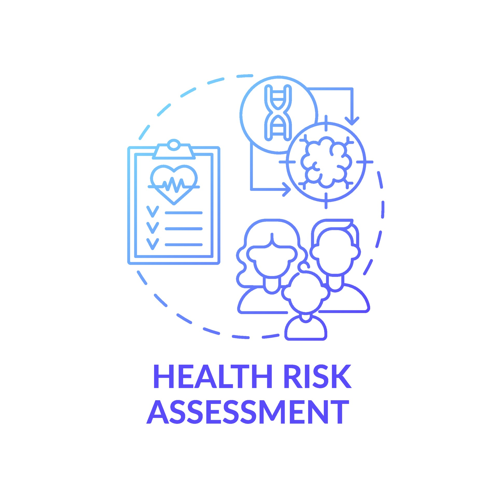
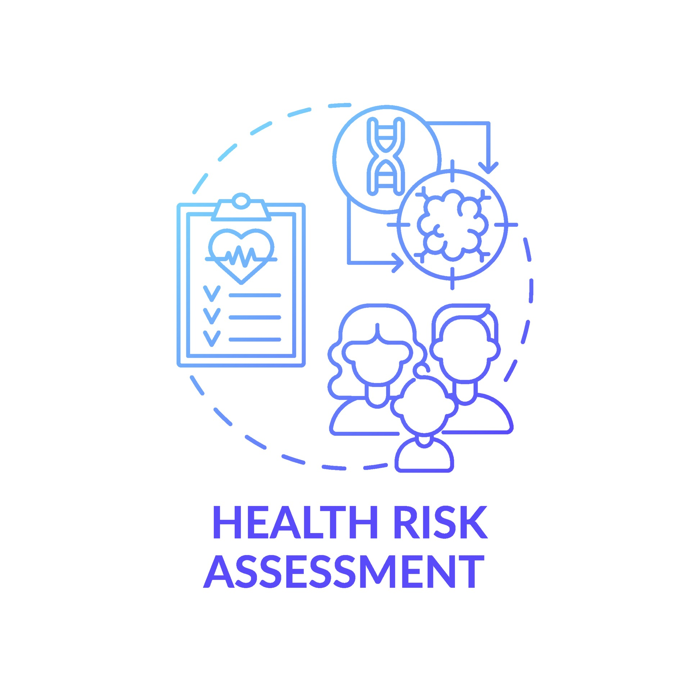
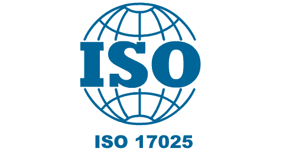
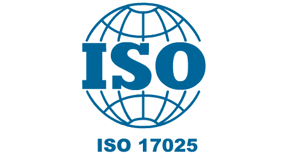

Tentang CHEMCONST
CHEMCONST merupakan divisi konsultasi di PT. Chemviro Buana Indonesia yang berfokus pada pengembangan dan implementasi sistem kesehatan dan keselamatan kerja (K3) di berbagai sektor industri. Kami memiliki tim ahli yang berpengalaman dalam menyusun dokumen Health Risk Assessment (HRA) guna mengidentifikasi bahaya kesehatan kerja yang ada di perusahaan sesuai dengan permenaker 05 tahun 2018.
Layanan kami mencakup berbagai jenis penilaian dan audit, seperti Assessment Psychosocial, Assessment Ergonomic, Audit Sistem K3, dan Audit Proper. Selain itu, kami juga menyediakan layanan konsultasi ISO 17025 untuk membantu laboratorium dalam memenuhi standar internasional. Dengan pendekatan yang komprehensif dan berbasis data, CHEMCONST berkomitmen untuk membantu perusahaan menciptakan lingkungan kerja yang aman dan sehat serta mematuhi semua peraturan yang berlaku. Layanan kami dirancang untuk memberikan solusi yang efektif dan praktis, memastikan bahwa setiap aspek dari sistem K3 perusahaan Anda terpenuhi dengan standar tertinggi.

 



 



Detail Layanan Lengkap
Klik untuk melihat detail dari setiap layanan kami
1. Gas Rumah Kaca (GRK), Karbon, dan Energi
- Peraturan Presiden No. 98 Tahun 2021 Tentang Penyelenggaraan Nilai Ekonomi Karbon
- Permen LHK No. 21 Tahun 2022 Tentang Penyelenggaraan Nilai Ekonomi Karbon
- Permen LHK No. P.73/MENLHK/SETJEN/KUM.1/12/2017 Tentang Pedoman Penyelenggaraan Dan Pelaporan Inventarisasi Gas Rumah Kaca Nasional
Layanan meliputi:
- Nilai Ekonomi Karbon (Carbon Footprint) - adalah pemberian harga pada setiap unit emisi gas rumah kaca (GRK) yang dihasilkan dari kegiatan manusia dan ekonomi.
- International Sustainability and Carbon Certification (ISCC) - adalah sistem sertifikasi untuk memastikan keberlanjutan, ketertelusuran, dan pengurangan emisi gas rumah kaca untuk berbagai jenis bahan baku dan produk.
- ISO 14064 Emisi Gas Rumah Kaca (Carbon Inventory) - adalah kerangka kerja untuk kuantifikasi, pelaporan, dan verifikasi emisi gas rumah kaca (GRK):
- ISO 14064-1:2018 untuk tingkat organisasi
- ISO 14064-2:2019 untuk proyek
- ISO 14064-3:2019 untuk validasi dan verifikasi emisi GRK oleh pihak ketiga
- Dokumen Rencana Aksi Mitigasi (DRAM) - adalah merancang, mendokumentasikan, dan memvalidasi upaya penurunan emisi gas rumah kaca (GRK).
2. Audit Lingkungan Hidup
- Peraturan Menteri Lingkungan Hidup No. 03 Tahun 2013 Tentang Audit Lingkungan Hidup
PT Chemviro Buana Indonesia membantu perusahaan melakukan Audit Lingkungan Hidup sesuai PerMen LH No. 03 Tahun 2013, didukung oleh Auditor bersertifikat untuk bidang Pekerjaan Umum, Perindustrian (Semen, Petrokimia, Pestisida, Amunisi), Energi & Mineral (Migas, PLTA, PLTU), Pengembangan Nuklir, dan Pengelolaan B3 & Limbah B3.
3. Health Risk Assessment (HRA)
- Permenaker No. 05 Tahun 2018 Tentang Keselamatan dan Kesehatan Kerja Lingkungan Kerja
Membantu penyusunan dokumen Health Risk Assessment (HRA) guna mengidentifikasi bahaya kesehatan kerja yang ada di perusahaan sesuai dengan permenaker 05 tahun 2018.
4. Assessment Ergonomic
- Permenaker No. 05 Tahun 2018 Tentang Keselamatan dan Kesehatan Kerja Lingkungan Kerja
Membantu perusahaan melakukan penilaian postur kerja di tempat kerja (permenaker 05 tahun 2018).
5. Assessment Psychosocial
- Permenaker No. 05 Tahun 2018 Tentang Keselamatan dan Kesehatan Kerja Lingkungan Kerja
Membantu perusahaan melakukan penilaian bahaya kesehatan kerja yang disebabkan faktor psikologi karyawan, terutama perusahaan yang area kerjanya di tempat terbatas (permenaker 05 tahun 2018).
6. Audit Sistem K3
- PP No. 50 Tahun 2012 Tentang Penerapan Sistem Manajemen Keselamatan dan Kesehatan Kerja
Membantu perusahaan membangun system kesehatan dan keselatan kerja (K3) dan dokumen safety lainnya (CHSEM) (PP No. 50 Tahun 2012).
7. Audit PROPER
Membantu perusahaan yang ikut dalam program proper yang diselenggarakan pemerintah dalam hal membangun sistem proper dan implementasinya.
8. Konsultan ISO 17025
- ISO/IEC 17025:2017 - General Requirements for the Competence of Testing and Calibration Laboratories
Membantu perusahaan khususnya yang bergerak dalam bidang jasa atau mempunyai laboratorium guna membangun sistem dan implementasi sampai mendapatkan sertifikat akreditasi ISO 17025 - Manajemen Laboratorium.
9. Jasa Penyusunan Dokumen Lingkungan (Pertek limbah cair dan emisi, rintek TPS B3, dan lain lain)
Menyusun dokumen perizinan lingkungan seperti Pertek Limbah Cair dan Emisi, Rintek TPS B3, dan dokumen lingkungan lainnya sesuai regulasi yang berlaku.
10. Training & Pelatihan
Membantu perusahaan meningkatkan kompetensi personel di bidang Kesehatan dan Keselamatan Kerja melalui berbagai program pelatihan profesional, meliputi Training LCA (Life Cycle Assessment), training PROPER dan SIMPEL, Training Audit Lingkungan, dan lain-lain.
Program Pelatihan & Sertifikasi:
1. Training dan Sertifikasi Personil (BNSP dan KEMNAKER RI) Industrial Hygiene. Level HIMU, HIMA dan HIU
Tujuan: Meningkatkan pengetahuan pengawasan bahaya kesehatan lingkungan kerja sesuai PerMenaker No. 5 Tahun 2018
Materi: Legal Aspek & SMK3, Toksikologi Industri, Identifikasi Bahaya (Fisika, Kimia, Biologik, Ergonomik, Psikososial), Ventilasi, APD, Survey & Penilaian Risiko
2. Training Health Risk Assessment (HRA)
Tujuan: Identifikasi dan prioritas penanganan bahaya kesehatan di tempat kerja
Materi: Konsep HRA, Identifikasi Risk & Hazard, Evaluasi Kualitatif & Kuantitatif, Klasifikasi Matrix Risiko, Pengendalian Risiko, Pengenalan Peralatan Sampling dan Analisa Lab
3. Training Health Impact Assessment (HIA)
Tujuan: Kajian dampak kesehatan masyarakat sesuai WHO Jakarta Charter Health Declaration dan ESG
Fokus: Dampak kesehatan dari proses produksi terhadap pekerja dan masyarakat umum
4. Training Food/Canteen Hygiene
Tujuan: Pengawasan keamanan makanan dengan integrasi elemen HACCP dan peraturan Kemenkes
Fokus: Keamanan makanan dari bahan baku sampai penyajian, pencegahan keracunan makanan di lingkungan industri
5. Training Respiratory Protective Program (RPP)
Tujuan: Hazard assessment dan kontrol pajanan zat kimia melalui pernapasan
Materi: Pemilihan respirator dan filter yang tepat, fitness assessment, fit testing, pelatihan pengguna respirator
6. Training Hearing Conservation Program (HCP)
Tujuan: Identifikasi dan pengendalian kebisingan di area kerja (maksimal 85 dB(A) sesuai PerMenaker 05/2018)
Materi: Penilaian kebisingan, Audiometric Testing, Management Control untuk melindungi pekerja
7. Training Penilaian Ergonomik (Metode SNI)
Tujuan: Optimalisasi sistem kerja sesuai prinsip ergonomi berdasarkan SNI 9011:2021
Fokus: Meningkatkan keselamatan, kesehatan, dan kenyamanan kerja
8. Training Chemical Hazard Protection Program
Tujuan: Menjaga kesehatan dan keselamatan kerja dari pajanan zat kimia di tempat kerja
Materi: Hazardous Chemicals Inventory & Assessment, Chemical Labels & Warning Signs, Safety Data Sheets, Information & Training, Hazard Communication Program Implementation (sesuai standar OSHA)
9. Training Manajemen K3 Rumah Sakit (Sertifikasi KEMNAKER RI)
Tujuan: Menciptakan Rumah Sakit yang aman, sehat, bebas pencemaran, mengurangi kecelakaan kerja dan penyakit akibat kerja
Materi: Sistem manajemen K3 RS, kebijakan dan peraturan K3, program K3, evakuasi pasien, pengendalian B3, persiapan Akreditasi RS
10. Training Lainnya
Training LCA (Life Cycle Assessment), Training PROPER dan SPARING, Training Audit Lingkungan Hidup, Sertifikasi Ahli K3 Lingkungan Kerja (AK3 Lingker)

.jpg)
.jpg)
.jpg)
.jpg)
.jpg)
.jpg)
.jpg)
.jpg)
.jpg)
.jpg)
{kind=link}